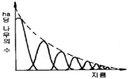
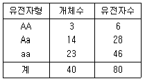
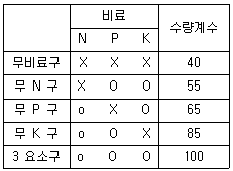
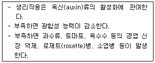

임업종묘기사 (2007-08-05 기출문제)
1과목: 조림학
1. 소나무의 개화에서 종자 성숙까지는 얼마나 걸리는가?
- 개화 후 3개월에 성숙한다.
- 개화 후 4개월에 성숙한다.
- 개화 후 그 해의 가을에 성숙한다.
- 개화 후 다음해 가을에 성숙한다.
(정답률: 알수없음)

2. 밤나무, 상수리나무, 굴참나무 등과 같은 전분(澱粉)종자의 저장 방법으로서 가장 알맞은 것은?
- 기건(氣乾)저장법
- 건사(乾砂)저장법
- 밀봉 냉장법
- 노천 매장법
(정답률: 알수없음)
3. 다음 수목 중 자웅이주가 아닌 것은?
- 소나무
- 은행나무
- 꽝꽝나무
- 호랑가시나무
(정답률: 알수없음)
4. 다음 중 가지치기의 효과가 아닌 것은?
- 옴이 없는 완만재 생산
- 직경 생장 촉진
- 줄기의 완만도 조절
- 하충목의 보호 및 생존경쟁의 완화
(정답률: 알수없음)
5. 회귀년(回歸年)을 고려하여야 할 삼림작업법은?
- 대상개벌 작업
- 대면적 산벌작업
- 산생모수 작업
- 순환택벌 작업
(정답률: 알수없음)
6. 삼림 작업의 하나의 체계에 해당하는 숲이 다음과 같은 구조로 나타날 경우 어떻게 해석 할 수 있는가?

- 소교목, 중교목, 대교목으로 구성되어 있는 삼림
- 순환벌채를 받고 있는 택벌림
- 벌채를 받은 일이 없는 삼림
- 우리나라 소나무 숲에 흔히 나타나고 있는 구조
(정답률: 알수없음)
7. 묘목의 식재밀도에 관한 설명 중 바른 것은?
- 식재밀도가 낮으면 지름은 가늘지만 완만재가 된다.
- 식재밀도가 낮을수록 총생산량 중 가지의 비율이 낮아진다.
- 식재밀도가 높을수록 단목 재적이 빨리 즐가한다.
- 일정면적에서 생산되는 양은 어느 식재밀도까지 본수가 많을수록 증가한다.
(정답률: 알수없음)
8. 다음의 무기원소 중 수목에 반드시 필요한 필요양료로 볼 수 없는 원소는?
- 질소(N)
- 망간(Mn)
- 철(Fe)
- 알루미늄(Al)
(정답률: 알수없음)
9. 조림 직후 조림지 풀베기 작업에 대하여 바르게 설명하고 있는 것은?
- 둘레베기는 소요 노동력을 크게 증가시킨다.
- 호도나무를 소식한 조림지는 모두베기를 하여 임지하부를 깨끗이 정리한다.
- 낙엽송 조림지의 풀베기 작업은 식재 후 3~4년간 계속하는 것이 보통이다.
- 줄베기 작업은 묘목을 식재한 중과 줄 사이에 자라는 풀과 잡목 및 관목을 제거하는 작업이다.
(정답률: 알수없음)
10. 다음 중 2-2-1 실생묘의 묘령을 옳게 설명한 것은?
- 파종상에서 2년, 그 뒤 두번 상채된 일이 있고, 각 상채상에서 1년을 경과한 5년생 묘목이다.
- 파종상에서 2년, 그 뒤 세 번 상채된 일이 있고, 각 상채상에서 1년을 경과한 5년생묘목이다.
- 파종상에서 2년, 그 뒤 두 번 상채된 일이 있고 각 상채상에서 2년경과 1년을 경과한 5년생 묘목이다.
- 묘령을 나타낸 적절한 답이 없다.
(정답률: 알수없음)
11. 다음 중 인공조림지의 무육작업 순서로 바람직한 것은?
- 가지치기→밑깎기→제벌→간벌
- 밑깎기→제벌→가지치기→간벌
- 가지치기→제벌→간벌→밑깎기
- 제벌→밑깎기→간벌→가지치기
(정답률: 알수없음)
12. 다음 중 임업묘포로서 적지가 아닌 것은?
- 토양은 일반적으로 양료가 많은 점질토가 좋다.
- 5° 정도의 완경사지가 좋다.
- 위도가 높고 한랭한 곳은 동남향이 좋다.
- 지하수위가 적절한 곳이 좋다.
(정답률: 알수없음)
13. 다음 중 수분과 수목생장의 관계를 설명한 것으로 틀린 것은?
- 수목이 영구위조점을 넘어서면 수분을 공급해 주어도 회복되지 않는다.
- 토양의 수분 가운데 수목이 이용 가능한 수분을 모세관수라고 한다.
- 토양의 수분포텐셜이 뿌리의 수분포텐셜보다 낮아야 식물 뿌리가 토양으로부터 수분을 흡수할 수 있다.
- 수분의 증산은 기공의 공변세포의 칼륨펌프와 관련이 있다.
(정답률: 알수없음)
14. 덩굴식물 가운데 조림목에 피해를 많이 주어 가장 문제가 되는 것은?
- 칡
- 머루
- 담쟁이
- 으아리류
(정답률: 알수없음)
15. 산림이나 묘포장 토양의 토양산도에 대하여 바르게 기술하고 있는 것은?
- 강 알칼리성 토양에서는 알루미늄이 쉽게 용출되어 수목의 뿌리에 해를 준다.
- pH 6.6~7.3인 토양에서는 미생물의 활동이 왕성하고 양료의 이용이 높으며, 부숙의 형성이 쉽게 진전된다.
- 토양의 pH가 8정도로 높아지면 토양 내 Mg나 Ca의 함량이 대폭 감소되고 Fe의 함량은 크게 증가된다.
- 소나무나 낙엽송은 pH 7~7.5의 토양산도를 유지하는 산림에서 잘 자란다.
(정답률: 알수없음)
16. 천염림보육에 대한 생태적 설명으로 틀린 것은?
- 미래목은 장차 미래에 효용가치가 높은 임목을 선정하되 실생묘보다 맹아목을 우선적으로 고려하여 선정하는 것이 좋다.
- 나무의 세력이 너무 왕성한 것은 제거하여 그 세력을 줄이고 미래목에 대한 영향이 없도록 한다.
- 하충임분은 숲 가꾸기를 통해서도 특별한 이유가 없는 한 그대로 두는 것이 좋다.
- 생육공간을 적당히 조절하며 적정 간격이 유지되도록 하며 간벌과 가지치기를 적절히 시행한다.
(정답률: 알수없음)
17. 다음 중 수목의 조직, 기관의 기능에 대한 설명으로 틀린 것은?
- 낙우송은 호흡근이 발달하여 침수상태에서도 생장할 수 있다.
- 후막조직은 세포벽이 두껍고 원형질이 없으며, 수목의 지탱 역할을 담당한다.
- 수목의 피목(lenticel)은 가스교환을 촉진하는 조직이다.
- 열대지방 수목의 판근(buttress)은 기계적으로 지지하는 역할은 하지만 호흡을 돕지는 않는다.
(정답률: 알수없음)
18. 채종원의 종자를 확보하기 위한 처리방법으로 맞지 않는 것은?
- 수광량이 많이 질 수 있도록 채종원을 관리한다.
- 질소비료의 과용을 피한다.
- 단근작업을 해 준다.
- 완상박피와 같은 스트레스를 주는 작업은 하지 않는다.
(정답률: 알수없음)
19. 모수작업법에 대한 설명으로 옳은 것은?
- 소나무를 보잔목으로 남길 때에는 ha당 50본 이상이어야 한다.
- 토양침식과 유실의 염려는 없다.
- 소나무의 경우 수간이 통직하고 세지성(細枝性)이며 수관폭이 좁은 것이 모수로 알맞다.
- 모수로 남겨야 할 임목은 전 임목에 대해 본수로 5%이다.
(정답률: 알수없음)
20. 혼효림(mixed fprest)의 장점으로 옳은 것은?
- 임목의 벌채비용 절감 등 시장성이 유리하다.
- 산림작업과 경영을 경제적으로 수행할 수 있다.
- 바라는 수종으로 임분을 용이하게 조성할 수 있다.
- 각종 피해 인자에 대한 저항력이 증가한다.
(정답률: 알수없음)
2과목: 임목육종학
21. 친대(親代)로서의 AABB × aabb를 생각할 때, F2에 가서 AABB와 aabb가 나타날 확률은?
- 6.25%
- 12.5%
- 25.0%
- 50.5%
(정답률: 알수없음)
22. 다음 중 반형매(Half-sib)에 관한 설명으로 옳은 것은?
- 양친을 함께 갖는 자식군(子息群)
- A × B, A × C, A × D교배의 자식군
- A × B, B × A교배의 자식군
- A × B, B × C, C × D교배의 자식군
(정답률: 알수없음)
23. 40본의 임목집단이 다음과 같은 수의 유전자형을 가지고 있을 때, A의 유전자 빈도(gene frequency)는?

- 0.25
- 0.75
- 1.30
- 3.01
(정답률: 알수없음)
24. 다음 교배에 대한 설명 중 틀린 것은?
- 이계보배는 유전적 변이를 많게 한다.
- 동계교배는 유전적 고정을 높인다.
- 동계교배에 의한 유전적 고정은 hetero 접합에서 온다.
- 자식이 계속되면 hetero 개체의 비율은 감소한다.
(정답률: 알수없음)
25. 다음 중 형질(形質傾斜 : cline)검사와 가장 관련이 깊은 인자는?
- 점진적인 환경의 변화
- 급격한 환경의 변화
- 돌연변이를 일으키는 환경 조건
- 균일한 환경 조건
(정답률: 알수없음)
26. 세포의 염색체가 이수체(異藪體)인 경우 나타나는 가장 큰 특성은?
- 붙임성이 높다.
- 생장이 빠르다.
- 내한성이 높다.
- 내병성이 높다.
(정답률: 알수없음)
27. 소나무 화분의 염색체 수는?
- 12
- 16
- 24
- 48
(정답률: 알수없음)
28. 다음 중 (A × B) × (C × D)교배 방법은?
- 2원교잡이다.
- 3교잡이다.
- 복교잡이다.
- 다교잡이다.
(정답률: 알수없음)
29. Hardy-Weinberg 법칙이 성립되기 위한 전제 조건을 기술한 것 중 틀린 것은?
- 교잡이 무작위적으로 일어나야 한다.
- 돌연변이가 일어나야 한다.
- 자연 도태가 없어야 한다.
- 표본 오차가 무시되는 정도의 대집단이라야 한다.
(정답률: 알수없음)
30. 전형매가계선발(全兄妹家系選拔)에 대하여 옳게 설명한 것은?
- 여러가지 형질을 종합적으로 선발한다.
- 유전력이 높을 때 집단설발 보다 경제적인 선발이다.
- 표현형을 기준으로 선발하는 방법이다.
- 유전자형을 기준으로 선발하는 방법이다.
(정답률: 알수없음)
31. 수종 혹은 산지를 도입할 때 고려하여야 할 다음 사항 중 특히 유의 하여야 할 사항은?
- 산지의 평균 기후값
- 산지의 토양형
- 산지의 지형과 지위지수
- 산지 기후의 극한값
(정답률: 알수없음)
32. 지식약세 현상은 어떠한 경우 발생하는가?
- 유전적으로 서로 관련된 개체간의 교배
- 한 집단내의 수형목간의 교배
- 개화기가 동일한 개체간의 교배
- 유전적으로 서로 연관되지 않은 개체간의 교배
(정답률: 알수없음)
33. 암꽃에 교대대를 씌우는 최적기는?
- 암꽃 개화 전
- 암꽃 개화 도중
- 암꽃 개화 후
- 시기에 관계 없음
(정답률: 알수없음)
34. 유전자조작기술에 대한 설명 중 틀린 것은?
- 식물의 DNA를 자를 때는 제한효소가 쓰인다.
- 플라스미드(plasmid)와 박테리오파지(bacteriophage)는 유전자운반체(vector)로 이용된다.
- 유전자총(bombardment)은 agrobacterium tumefaciens를 탄환으로 하여 DNA 단편을 강제로 주입하는 방법이다.
- 재조합 DNA를 갖는 형질전환체의 식별은 주로 항생제 저항성 검정을 통하여 이루어진다.
(정답률: 알수없음)
35. 임목의 개화생리에 대한 설명 중 틀린 것은?
- 수목의 영양상태를 좋게 하면 개화가 촉진된다.
- 개화능력은 유전적요인이 지배하지 않는다.
- 수분스트레스는 개화를 촉진한다.
- 지베렐린과 같은 식물호르몬도 개화에 영향을 미친다.
(정답률: 알수없음)
36. 조직배양법에 대한 설명이 아닌 것은?
- 환경의 영향을 받지 않는다.
- 항시 수량 조절이 가능하다.
- 질병 감염이 문제점이다.
- 체세포 변이가 발생한다.
(정답률: 알수없음)
37. 다음 중 천연적인 분포지역이 대단히 넓어서 지리적 원인의 유전변이가 크기 때문에 도입할 원산지에 대한 평가를 상태적으로 보다 신중히 해야 될 수중은?
- 낙엽송
- 라디아타소나무
- 구주소나무
- 편백
(정답률: 알수없음)
38. 차대검정림을 설계, 조성하는 과정에서 고려해야 될 사항을 바르게 기술하고 있는 내용은?
- 시험림은 가능한 한 척박한 지역에 조성한다.
- 시험림의 조성에 가능한 한 가계를 임의 배치하여 식재한다.
- 시험림의 전체 입지가 불균일하면 하나의 시험구를 크게 하고 시험구의 반복수를 축소하는 것이 좋다.
- 시험림은 주변에 동일 수종이 천연적으로 분포하는 지역을 피해서 조성한다.
(정답률: 알수없음)
39. 천연림(天然林)의 임분을 천연갱신(天然更新)에 의해 유전적으로 개량할 방법 중 가장 바르게 설명한 것은?
- 우량목만 제거하고 불량목만 남겨 둔다.
- 불량목은 제거하고 우량목만 남겨 둔다.
- 불량목과 우량목을 일부 제거하고, ha당 25본만 남겨 둔다.
- 불량목과 우량목을 일부 제거하고 도입수종을 식재한다.
(정답률: 알수없음)
40. 라틴방격법의 설명으로 틀린 것은?
- 양방향의 지력변이가 있을 때 사용한다.
- 처리와 반복수가 같다.
- 종과 횡 방향에 각각 무작위로 배치한다.
- 산지에서 적용하는데 난괴법보다 간편하다.
(정답률: 알수없음)
3과목: 산림보호학
41. 전염성 수병의 원인이 아닌 것은?
- 진균
- 세균
- 광독(鑛毒)
- 바이러스
(정답률: 알수없음)
42. 다음 중 인공적으로 배양할 수 있는 병원균은?
- phytoplasma
- Bacteria
- Virus
- Powdery mildew
(정답률: 알수없음)
43. 다음 중 표징을 나타낸 것은?
- 오동나무 잎이 작고 연한 녹색으로 되고 잔가지가 많이 발생하였다.
- 벚나무 잎에 갈색의 반점이 형성되더니 구멍이 뚫렸다.
- 잣나무 줄기에 황색의 포자 주머니가 생겼다.
- 소나무 잎이 5~6월에 누렇게 되면서 낙엽이 되었다.
(정답률: 알수없음)
44. 수목 뿌리혹병(crown gall) 세균의 침입장소로 가장 거리가 먼 것은?
- 지하부의 접목 부위
- 삽목의 하단부
- 뿌리의 절단면
- 뿌리의 기공
(정답률: 알수없음)
45. 묘목이 어느 정도 자라서 목화(木化)된 후에 뿌리가 침해되어 부패되는 모잘록병의 피해형은?
- 도복형
- 지중부패형
- 수부형
- 근부형
(정답률: 알수없음)
46. 병의 발생이 진딧물 및 깍지벌레와 같은 해충과 밀접한 관계를 가지고 있는 것은?
- 흰가루병
- 그을음병
- 줄기마름병
- 점무늬병
(정답률: 알수없음)
47. 겨울포자가 발아해서 전균사 상에 형성된 포자명은?
- 녹병포자
- 여름포자
- 녹포자
- 담자포자
(정답률: 알수없음)
48. 다음 수목병해 방제법 중 무육작업에 의한 방제의 예로 가장 적합한 것은?
- 중간기주가 되는 식물의 분포가 많은 곳에는 조림을 하지 않는다.
- 항구, 공항 및 국제 우편국에서 종자, 생목, 삽수, 목재에 검사를 한다.
- 약제를 수간에 주사한다.
- 토양소독, 종자소독을 실시한다.
(정답률: 알수없음)
49. 파이토플라스마에 의한 수병의 방제 약제는?
- 스트렙토 마이신
- 엑티디이온 BR
- 가스가마이신
- 옥시테트라싸이클린
(정답률: 알수없음)
50. 박쥐나방에 대한 설명으로 틀린 것은?
- 1년 1회 발생하며 알로 월동한다.
- 유충이 나무줄기를 가해한다.
- 유충은 똥을 밖으로 내보내지 않는다.
- 초본류의 줄기에도 구멍을 뚫고 가해한다.
(정답률: 알수없음)
51. 다음 중 가해식물의 종류가 가장 많은 산림 해충은?
- 흰불나방
- 솔나방
- 텐트나방
- 솔잎혹파리
(정답률: 알수없음)
52. 나무좀, 하느소, 바구미 등과 같은 천공성 해충을 방제하는데 가장 알맞는 방법은?
- 온도처리법
- 통나무 유살법
- 경운법
- 잡아 죽이는 방법
(정답률: 알수없음)
53. 다음 중 솔잎혹파리의 기생성 천적이 아닌 것은?
- 솔잎혹파리먹좀벌
- 혹파리원뿔먹좀벌
- 혹파이살이먹좀벌
- 혹파리등뿔먹좀벌
(정답률: 알수없음)
54. 다음 중 소목에 혹(충영)을 형성하는 해충은?
- 텐트나방
- 밤나무순혹벌
- 오리나무잎벌레
- 박쥐나방
(정답률: 알수없음)
55. 다음 중 내화력이 상대적으로 가장 강한 침엽수종은?
- 삼나무
- 은행나무
- 편백
- 곰솔
(정답률: 알수없음)
56. 다음 중 좁은 의미의 약해(phytotoxicity)의 정의로 가장 옳은 것은?
- 농약 사용에 의하여 야생동물, 가축이 입는 피해
- 농약 사용에 의하여 방제대상이 아닌 식물이 입는 피해
- 농약 사용에 의하여 꿀벌, 누에, 천적곤충 등 유용곤충이 입는 피해
- 잔류농약에 의한 생태계의 파괴
(정답률: 알수없음)
57. 곤충의 증식을 억제하는 중요 인자가 아닌 것은?
- 식이(먹이)
- 기상조건
- 천적
- 타감작용
(정답률: 알수없음)
58. 농약의 독성을 표시하는 단위에서 LD50이란?
- 50% 치사에 필요한 농약의 농도
- 50% 치사에 필요한 농약의 종류
- 50% 치사에 필요한 농약의 량
- 50% 치사에 필요한 시간
(정답률: 알수없음)
59. 해충의 약제저항성에 관한 설명으로 가장 거리가 먼 것은?
- 돌연변이 유전자군에 의한 요인이 가장 크다.
- 약제저항성은 생태적 특성이다.
- 약제에 대한 도태 및 생존의 결과이다.
- 약제저항성은 유전적 특성이다.
(정답률: 알수없음)
60. 다음 중 상륜(frost ring)에 대한 설명으로 옳은 것은?
- 조상(early frost)의 피해로 인하여 나타나는 상해의 피해이다.
- 주로 추운 지방에서 고립목이나 임연부의 교목에서 주로 발생하는 상렬의 일종이다.
- 만상(late frost)의 피해로 수목의 생장이 한 때 중지되었을 때 나타나는 피해의 일종이다.
- 한겨울 수목의 완전휴면 기간 중 저온으로 인하여 치수에 발생하는 피해현상이다.
(정답률: 알수없음)
4과목: 토양학 및 비료학
61. 논 토양이 Glei 층으로 이루어져 있다면 이 토양은 다음 중 어느 층에 가깝겠는가?
- 산화층
- 환원층
- 집적층
- 모재층
(정답률: 알수없음)
62. 토성을 결정할 때 고려할 사항이 아닌 것은?
- 세토 중 모래의 함량
- 세토 중 미사의 함량
- 세토 중 점토의 함량
- 세토 중 수소이온의 함량
(정답률: 알수없음)
63. 영구위조계수(permanent wilting point)란 수분이 토양입자에 얼마의 힘 이상으로 결합되었을 때 나타나는가?
- 0.1MPa
- 0.5MPa
- 1.0MPa
- 1.5MPa
(정답률: 알수없음)
64. 1:1 격자형 점토광물의 주요 음전하 생성원인은?
- 동형치환
- 변두리전하
- pH 감소
 분자비 감소
분자비 감소
(정답률: 알수없음)
65. 토양수분 중 식물체에 흡수ㆍ이용되는 유효수분을 의미하는 것은?
- 중력수
- 흡습수
- 모관수
- 결합수
(정답률: 알수없음)
66. 식물의 생리적인 면에서 각종 작물의 pH는 특수작물을 제외하고 얼마 정도가 가장 적당한가?
- 2.5
- 4.5
- 6.5
- 8.5
(정답률: 알수없음)
67. 40g의 건토(논토양)를 24시간 물 속에 침지한 후 물 속에서 사별(篩別)하여 체(1mm)위에 남은 양이 30g 이었고, 체 위에 토양을 손가락으로 잘 비벼 다시 물 속에서 사별하여 이 때 남은 양이 15g 이었다면 이 토양의 입단화도(粒團化度)는 얼마인가?
- 40%
- 50%
- 60%
- 70%
(정답률: 알수없음)
68. 1:1 격자형의 대표적 광물로서 적색 또는 회색의 포드졸 토양의 주요 점토광물은?
- Illite
- Vermiculite
- Montmorillonite
- Kaolinite
(정답률: 알수없음)
69. 볏짚의 탄소 함량은 50%, 질소 함량은 0.5%이다. 탄질율이 10이고 탄소동화율이 30%인 사상균이 볏짚 100g 분해할 때, 부족한 질소는 약 몇 g인가?
- 0.5
- 1.0
- 1.5
- 2.0
(정답률: 알수없음)
70. 다음 중 점토의 입경 값으로 옳은 것은?
- 2mm 이상
- 2~0.2mm
- 0.2~0.02mm
- 0.002mm 이하
(정답률: 알수없음)
71. 초목화를 비료로 사용할 때의 가장 중요한 유효 성분은?
- 질소
- 탄소
- 칼리
- 인산
(정답률: 알수없음)
72. 유효질소 12kg 이 필요한 경우 요소로 시비하고자 할 때 시비량은 약 몇 kg인가? (단, 요소의 N성분은 46%, 흡수율은 83%이다.)
- 21
- 31
- 41
- 51
(정답률: 알수없음)
73. 어떤 농작물의 3요소 시험을 실시한 결과가 다음 표와 같을 때 질소 단독효과 지수는?

- 35
- 45
- 55
- 60
(정답률: 알수없음)
74. 질소성분이 과잉일 때 주로 나타나는 증상은?
- 고구마, 감자 등에 섬유질이 많아진다.
- 늙은 닢의 끝에 갈색 또는 자주색 반점이 생긴다.
- 뚜렷한 증세는 나타나지 않으나 키가 짧고 잎이 두꺼워진다.
- 잎이 짙은 녹색을 띄며 지나치게 무성하여 병해충에 약해진다.
(정답률: 알수없음)
75. 석회질비료는 대부분 토양의 물리ㆍ화학적 성질을 개선하는데 사용되고 있는데, 석회질비료의 주성분인 알칼리분이 가장 많은 비료는?
- 석회고토
- 소석회
- 석회석
- 생석회
(정답률: 알수없음)
76. 다음 중 비료를 배합함으로써 상호간의 비효를 증진시키는 경우가 아닌 것은?
- 황산남모늄ㆍ인분뇨ㆍ석회
- 부숙인분뇨ㆍ과린산석회ㆍ황산칼륨
- 황산암모늄ㆍ골분ㆍ황산칼륨
- 깻묵ㆍ과린산석회ㆍ황산칼륨
(정답률: 알수없음)
77. 다음은 시험구 배치의 예이다. 동일구역의 밭이라고 할 때 부적당한 임의 배치법에 해당하는 것은?
- 무질소구-3요소구-무인산구-무칼리구
- 무질소구-무질소구-3요소구-3요소구
- 3요소구-무질소구-3요소구-무질소구
- 무인산구-무질소구-무칼리구-무질소구
(정답률: 알수없음)
78. 다음 보기에서 설명하는 양분은 무엇인가?

- Fe
- Zn
- Mo
- Cl
(정답률: 알수없음)
79. 다음 복합비료 중 주성분 함량이 가장 많은 비료는?
- 21-21-17
- 11-21-11
- 18-18-18
- 0-40-10
(정답률: 알수없음)
80. 양분의 엽면살포에 대한 설명 중 틀린 것은?
- 뿌리가 건전하지 못한 경우에 효과가 크다.
- 흡수량은 잎의 이면보다 표면에서 많고 젊은 잎에서 효과가 크다.
- 적은 양으로도 비효가 빨리 나타난다.
- 질소질비료에서는 요소가 엽면 살포에 적합하다.
(정답률: 알수없음)